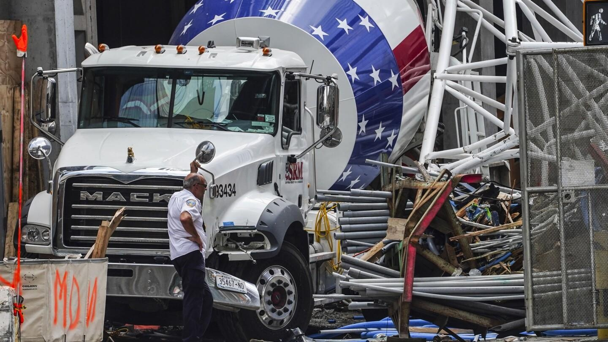

New York City crane collapse linked to company and operator with history of safety violationsNew York City crane collapse linked to company and operator with history of safety violations New York City crane collapse linked to company and operator with history of safety violations NEW YORK (AP) — As authorities continue to investigate a crane collapse that rained thousands of pounds of steel debris onto a busy Manhattan thoroughfare Wednesday, the owner and operator of the failed crane are facing scrutiny over past safety failures. The tower crane, owned by New York Crane and Equipment Corp., was hoisting concrete to the 36th story of a luxury high-rise when a fire broke out in the machine’s cab, officials said. The flames burned through a cable holding the crane’s arm in place, sending the 180-foot-long boom crashing to the ground. Though no one was seriously hurt, the near catastrophe stirred memories of past crane collapses, including a series of incidents involving people connected to Wednesday’s accident. Two of the city’s most disastrous crane collapses came over the span of two months in 2008, both involving cranes owned by New York Crane and Equipment Corp. Nine people died, pushing the city to overhaul its process of inspecting and regulating tower cranes. Later that year, a construction worker fell to his death while helping dismantle a crane owned by a different company. One of the two crane operators, whose license was suspended for eight months, was Chris Van Duyne. The same man was operating the crane that caught fire Wednesday, officials said. Phone messages left with Van Duyne and New York Crane were not immediately returned Thursday. The fire’s cause is still under investigation. In the meantime, neither the crane company nor its operator have been publicly accused of wrongdoing. As officials await answers, City Council Member Pierina Sanchez, the head of the council’s committee on housing and building, said it was troubling that a crane company cited for past safety failures was once again linked to a major incident. “It raises concern that a company that has a history of injuries and fatalities on site is continuing to do business in the city of New York,” she said. “Why do they still have a license?” Following the consecutive collapses 15 years ago, New York adopted a series of stringent crane requirements that go beyond those of other states, according to industry experts. Stephen Smith, the executive director of the Center for Building in North America, said the regulations — which require multiple city-specific licenses and high insurance liability –- have the unintended consequence of keeping new companies from entering New York’s market, effectively allowing a small number of players to dominate the industry. “Crane collapses are not that frequent, so if multiple high-profile accidents happen with the same company, it doesn’t reflect well on them,” Smith added. “You have to wonder if we’re not keeping out more competent operators and firms.” Founded by James Lomma – known locally as the “King of Cranes” – New York Crane and Equipment Corp. has long been one of the city’s top crane providers, helping to build the Hudson Yards development and the new World Trade Center. But the Queens-based company has also faced a series of criminal and civil actions. In March of 2008, one of the company’s cranes toppled on Manhattan’s east side, pulverizing buildings on the way down and fatally injuring seven people. Prosecutors blamed that accident on shoddy work by a crane rigger, but a jury acquitted him of manslaughter charges after his lawyer argued that bad welding and other factors were to blame. Two months later, another Lomma-owned tower crane collapsed in the city, killing the operator Donald Leo and a construction worker, Ramadan Kurtaj. Investigators blamed that collapse on a busted bearing, manufactured by a Chinese company that had warned Lomma it did not have confidence in the product. Lomma was acquitted of manslaughter charges, but he was sued by the workers’ families and ordered by an appeals court to pay $35 million for a series of “wonton and egregious” decisions that led to the collapse. He filed for bankruptcy soon after, and he died in 2019. The company is currently managed by Sal Isola, who did not return a request for comment. In 2004, New York Crane and Construction Corp. faced allegations of poor maintenance after another worker, Glenn Gonnert, fell to his death from the mast of a crane. In court papers, the victim’s son said the accidents were due in part to defects that caused oil to leak from the crane’s motor, creating a slippery surface that allowed his father to fall to his death. The company denied wrongdoing. |
 |